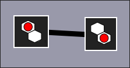
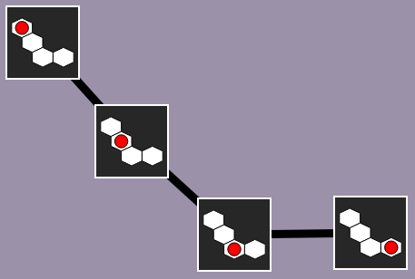
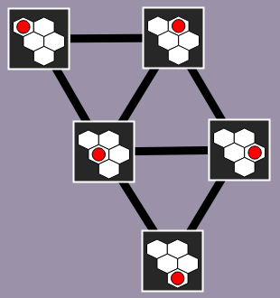
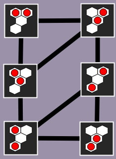

Exemple
avec un plateau de 2 cases
Aidez Castor à prendre en photo toutes les positions possibles de la bille rouge. Vous pouvez la déplacerdes deux billes rouges. Vous pouvez les déplacer sur le plateau ci-dessous.
Ensuite, placez un trait entre deux photos s'il est possible de passer d'une situation à l'autre en déplaçant laune bille d'une case vers une case voisine.
Cliquez sur les photos pour les relier par des traits.
|
|
On prend une photo pour chacune des 45 positions possibles de la bille. Pour s'y retrouver facilement, on peut disposer les photos dans le cadre gris en fonction de la position de la bille dans chaque photo, comme montré ci-dessous. On peut alors ajouter des traits entre les photos décrivant des positions où la bille n'a bougé que d'une case.
On prend une photo pour chacune des 6 configurations possibles des deux billes. Pour s'y retrouver facilement, on peut organiser les photos. Par exemple, on peut faire un première colonne avec les photos ayant une bille dans la case en haut à gauche, et une seconde colonne avec les photos n'ayant pas de bille dans cette case. On peut également trier les photos à l'intérieur de la colonne, en fonction du remplissage des autres cases. On peut alors ajouter les traits corresponds aux déplacements possibles des billes.
  
Pour être sûr de n'avoir oublié aucun trait, on peut vérifier les traits qui partent de chaque photo. Pour une photo donnée, on compte le nombre de cases blanches qui se trouvent autour de la billele nombre de cases blanches qui se trouvent autour de la première bille, auquel on additionne le nombre de cases blanches qui se trouvent autour de la seconde bille. Ce nombreLe total doit correspondre au nombre de traits qui sont reliés à cette photo, puisque cela correspond au nombre de déplacements possibles.
Ce sujet illustre comment représenter des situations (photos d'un état) et des transitions (déplacement d'une bille) sous forme d'un graphe, c'est-à-dire un ensemble d'objets dont certains sont reliés entre eux par des traits. Il est très intéressant de ramener un problème à une vision sous forme de graphe, car il existe de nombreux algorithmes très efficaces pour traiter des problèmes exprimés par des graphes.
Certains problèmes apparaissent naturellement sous forme de graphe, comme par exemple trouver un chemin pour voyager d'une ville à une autre : le graphe est alors constitué des villes et des routes qui les relient. Dans d'autres problèmes, au contraire, le graphe n'est pas vraiment visible à première vue. On parle alors de graphe implicite.
L'expertise d'un programmeur consiste à être capable de repérer qu'un problème qui ne ressemble pas du tout à un problème de graphe peut en fait quand même s'exprimer sous forme d'un graphe. Un tel programmeur peut alors, plutôt que de développer un algorithme ad-hoc et inefficace, s'appuyer sur un algorithme de graphe standard et très efficace.